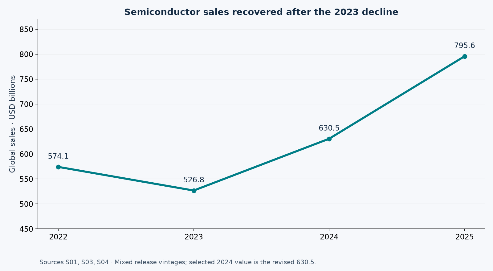
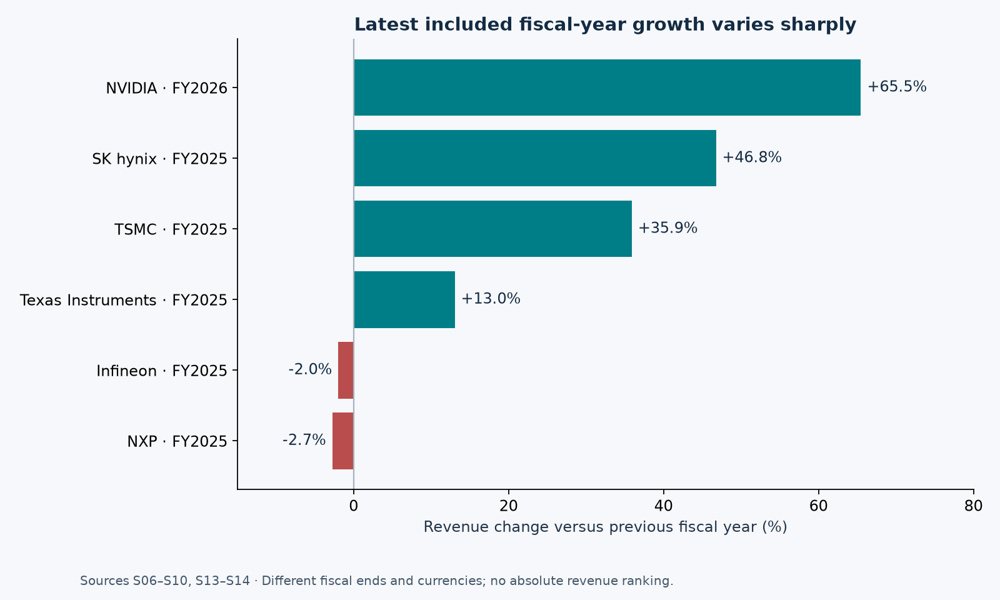
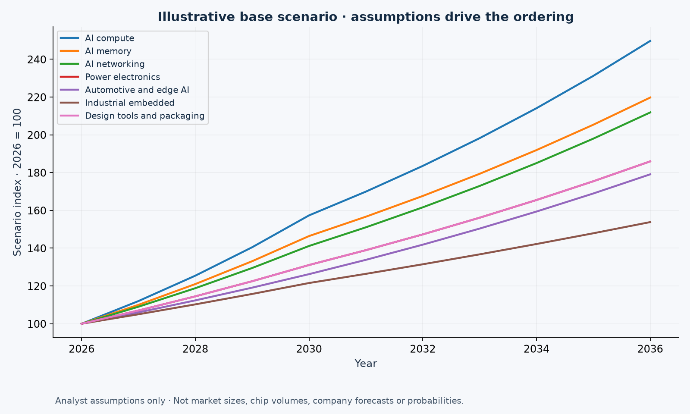
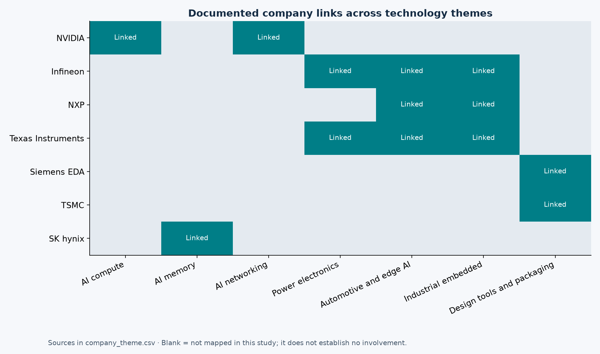

Semiconductor Demand Outlook 2036
Explore historical revenue patterns, company technology links and the consequences of transparent growth assumptions.
7 companies
7 themes
17 sources
3 sensitivity cases
Detailed findings · Methodology · Power BI instructions
Read the evidence before the scenarios
Selected market sales rose from USD 526.8 billion in 2023 to USD 795.6 billion in 2025. Latest included company revenue growth is strongest for NVIDIA (+65.5%), SK hynix (+46.8%) and TSMC (+35.9%) in this sample, across different fiscal periods. This supports further research into AI infrastructure and its dependencies. It does not establish a ten-year winner. The AI compute base scenario reaches 249.7 in 2036 because of its assigned growth assumptions, not a validated forecast.



